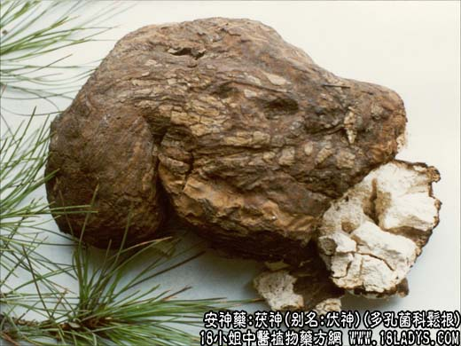

【中药概述】
茯神，别名：伏神，为多孔菌科真菌茯苓菌核中间抱有松根的部分。甘、平。归心经。
宁心安神：用于心悸怔忡，失眠，健忘，诸筋挛缩等症。可配伍同类药等同用。
【药效鉴别】
茯神木安养心神，祛风舒筋，与乳香合用，活血舒筋与祛风舒筋并用，更增舒筋定痛之功。
【临证应用】
（<卫生宝鉴>茯神散：茯神炒30g，薄荷焙，蝎梢去毒各60g。为末。每服6g，温酒调下。主中风舌强语涩）。
【药理作用】
镇静作用较茯苓强，其它与茯苓相同。
【用量用法】
10——20g，水煎服，或入剂。
本文解释权归中药名称大全，本文地址https://www.daquan.com/post/1962.html